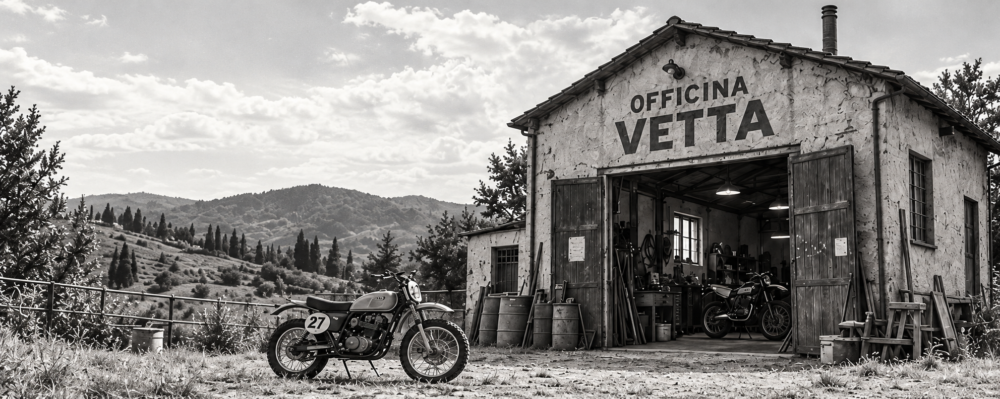
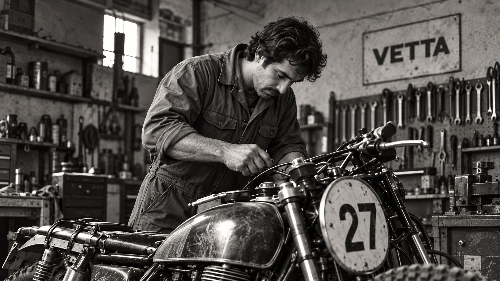
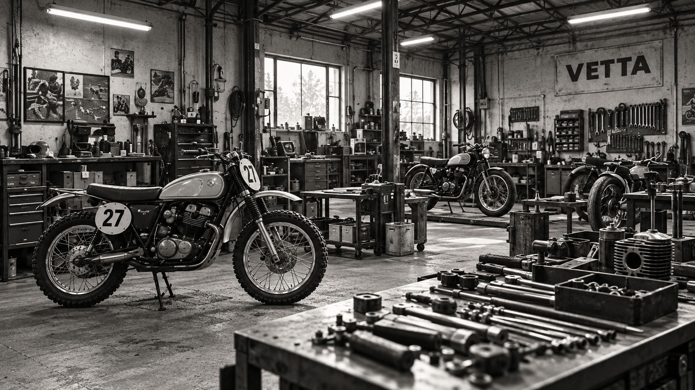
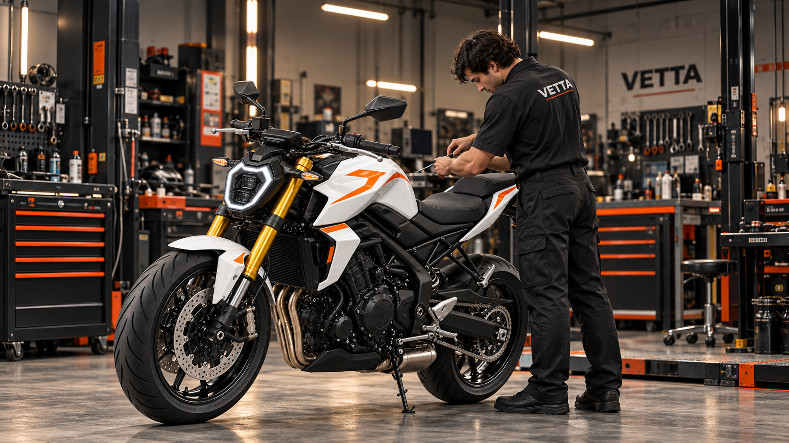

LA NOSTRA STORIA / DAL 1980
OGNI STORIA
HA UN INIZIO.
1980 — VAL DI MUGELLO, ITALIA
1980 / LE ORIGINI
UN’OFFICINA.
UNA PASSIONE.
Riccardo Vetta apre la sua officina in Val di Mugello. Prepara scrambler per le competizioni nazionali: moto essenziali, costruite per affrontare lo sterrato e migliorate gara dopo gara.

1990–2010 /
L’OFFICINA CRESCE
DALLE GARE
ALLA STRADA.
Alla preparazione delle moto da gara si affiancano manutenzione, riparazioni e messa a punto. L’officina diventa un punto di riferimento per i motociclisti del territorio, senza perdere lo spirito delle origini.

OGGI / IL NUOVO INIZIO
RADICI ITALIANE.
NUOVE AMBIZIONI.
Il gruppo asiatico Kensei Motor Group acquisisce l’officina e sceglie di rilanciare il marchio VETTA. L’esperienza italiana incontra una nuova capacità produttiva: nascono V500-SC, V650-NK e V900-SS, tre interpretazioni della stessa passione.
